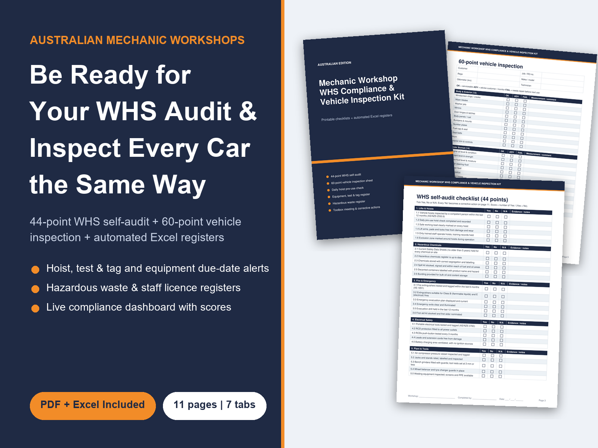

Mechanic workshop WHS checklist (Australia)
The 10 checks that come up most often in motor vehicle workshops. Print this page and tick it off. If you can't tick an item, that's where to start.
| Area | What "compliant" looks like | |
|---|---|---|
| ☐ | Hoists | Inspected by a competent person in the last 12 months (AS/NZS 2550.9), with a daily pre-use check recorded |
| ☐ | Safety Data Sheets | Current SDS (under 5 years old) for every chemical on site, plus a hazardous chemicals register |
| ☐ | Spill kit | Stocked and within reach of fuel and oil areas, with bunding for bulk oil and coolant |
| ☐ | Fire extinguishers | Tested and tagged in the last 6 months (AS 1851), suitable for Class B and E fires |
| ☐ | Test and tag | Portable electrical tools tested and tagged (AS/NZS 3760); RCDs push-button tested every 3 months |
| ☐ | Exhaust extraction | Used whenever engines run indoors |
| ☐ | PPE | Safety glasses, gloves and boots supplied and worn; respirators for paint and dust work |
| ☐ | Induction | Completed and recorded for every new worker and apprentice |
| ☐ | Waste oil | Collected by a licensed transporter, with dockets kept as proof of lawful disposal |
| ☐ | Incident register | Incidents and near misses recorded, with corrective actions tracked to closure |
Why written records matter
Under Australian WHS laws, the person running the business (the PCBU) must manage risks so far as is reasonably practicable. When an inspector, insurer or customer asks, a dated, signed record is your evidence. A verbal "we always do that" isn't.
How often to check
- Daily: hoist pre-use check before the first lift
- Monthly: toolbox meeting, spill kit and first aid kit check
- Quarterly: RCD push-button test, full WHS self-audit
- 6-monthly: fire extinguisher test and tag
- Yearly: hoist inspection by a competent person, test and tag of portable tools, pressure vessel inspection
General guidance only. Requirements vary by state and territory, so confirm your obligations with your state WHS regulator and EPA.

Get the full 44-point audit, ready to print and track
The Mechanic Workshop WHS Checklist & Vehicle Inspection Kit includes an 11-page printable PDF (44-point WHS self-audit, 60-point vehicle inspection sheet, daily hoist check, equipment, waste and corrective action registers) plus a 7-tab Excel workbook. The workbook scores your compliance and flags overdue equipment and expiring licences automatically.
Get the kit